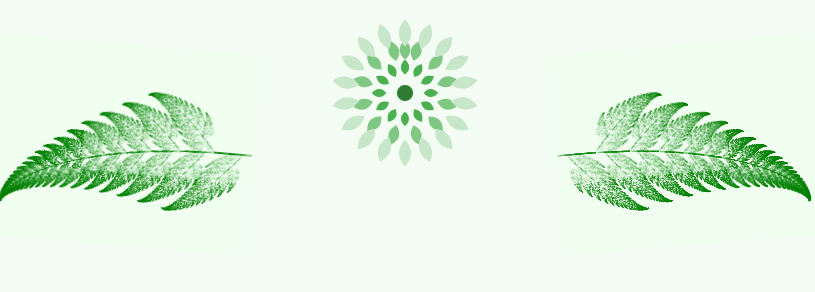

Bine ai venit în Eubotanica
Un spațiu dedicat cunoașterii și explorării diversității botanice și micologice — de la plante medicinale și comestibile, la ciuperci fascinante și specii rare. Fiecare formă de viață vegetală este abordată cu respect, rigoare documentară și curiozitate etnobotanică.
Misiunea noastră
Eubotanica își propune să cultive o relație mai profundă între oameni și lumea vegetală. Ne dedicăm documentării și prezentării plantelor și ciupercilor dintr-o perspectivă holistică: științifică, culturală și spirituală. Credem că natura nu este doar resursă, ci și învățător, și că fiecare specie poartă în ea o poveste care merită spusă cu grijă, respect și admirație.